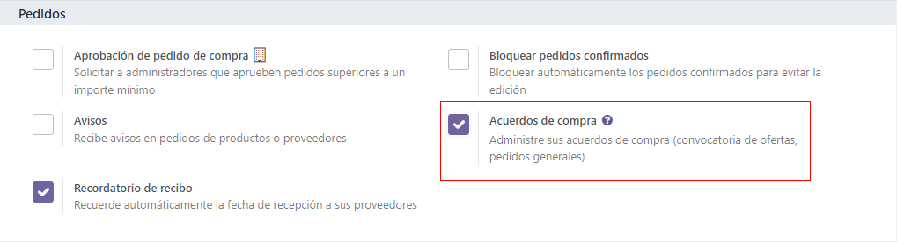
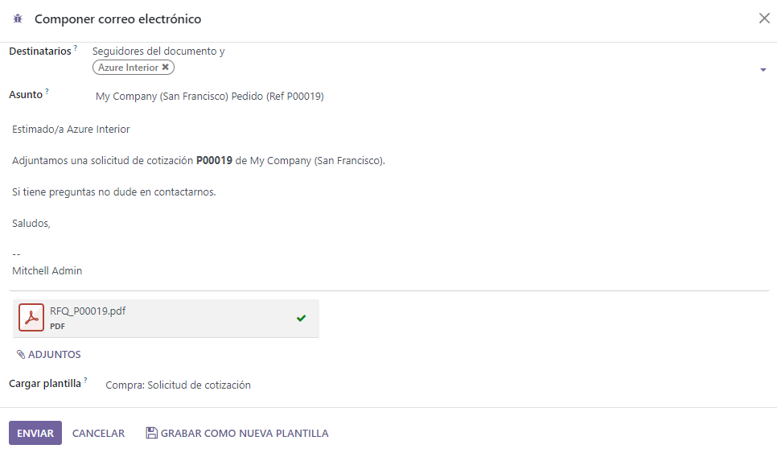
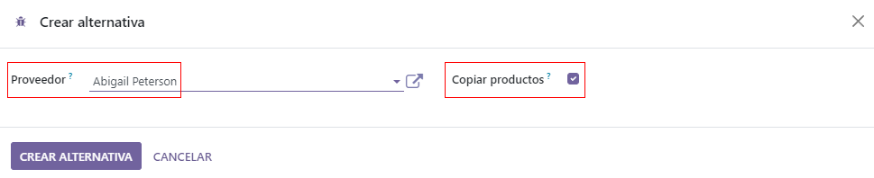
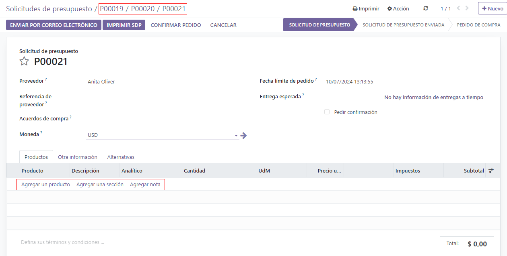
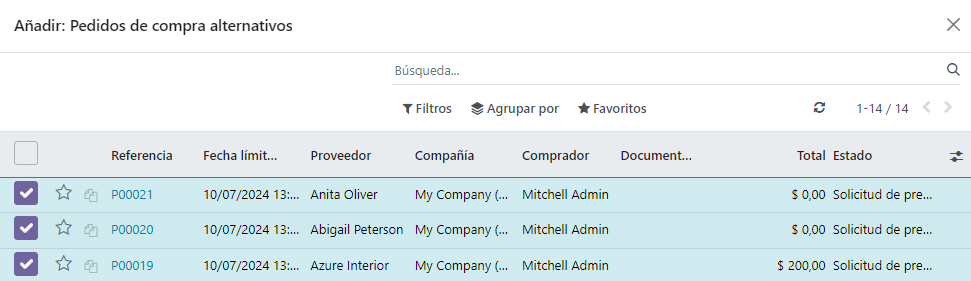
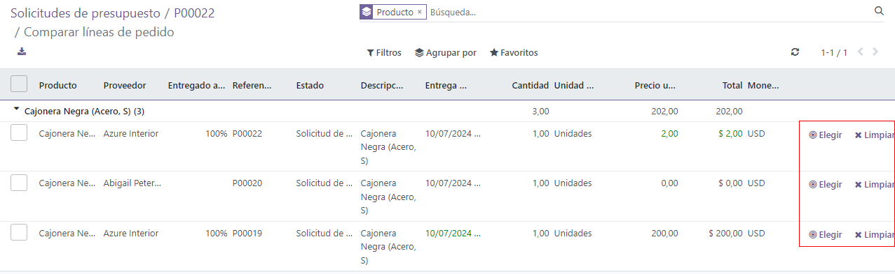
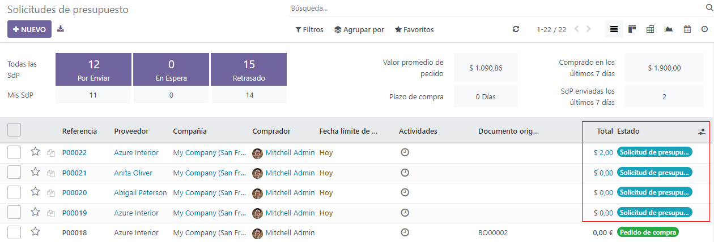
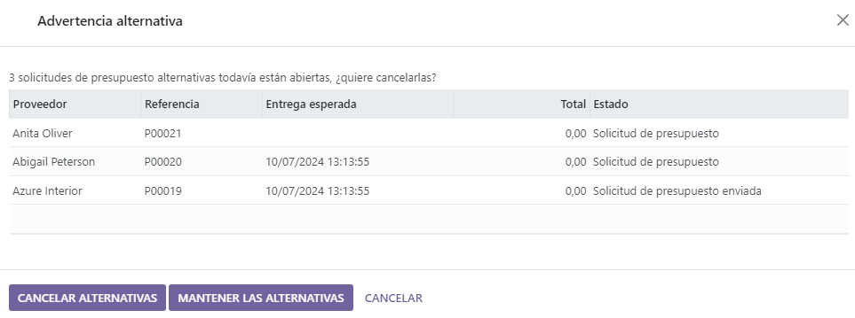

Create alternative requests for quotation for multiple vendors¶
Sometimes, companies might want to request offers from multiple vendors at the same time, by inviting those vendors to submit offers for similar goods or services all at once. This helps companies to select the cheapest (and fastest) vendors, depending on their specific business needs.
In Odoo, this can be done by adding alternative requests for quotation (RFQs) for different vendors. Once a response is received from each vendor, the product lines from each RFQ can be compared, and a decision can be made for which products to purchase from which vendors.
Sometimes referred to as a call for tender, this process is primarily used by organizations in the public sector, who are legally bound to use it when making a purchase. However, private companies can also use alternative RFQs to spend money efficiently, as well.
Configure purchase agreement settings¶
To create alternative RFQs directly from a quotation, the Purchase Agreements feature first needs to be enabled in the settings of the Purchase app. To do this, go to , and under the Orders section, click the checkbox next to Purchase Agreements. Doing so will enable the ability to create alternative RFQs, as well as the ability to create blanket orders.
Tip
To save time on a call for tender, custom vendors, prices, and delivery lead times can be set in the Purchase tab on a product form. To do so, navigate to , and select a product to edit. From the product form, click the Purchase tab, then click Add a line. From the drop-down menu, choose a vendor to set under the Vendor column, and set a Price and Delivery Lead Time if desired. Clicking the additional options (two-dots) icon provides additional visibility options to add to the line item.
Create an RFQ¶
To create a new RFQ, navigate to the app, and click New.
Then, add information to the RFQ form: add a vendor from the drop-down next to the Vendor field, and click Add a product to select a product from the drop-down menu in the Product column. Then, set the desired purchase quantity in the Quantity column, and change the purchase price in the Unit Price column, if desired.
Clicking the additional options (two-dots) icon provides additional visibility options to add to the line item. Repeat these steps to add as many options as desired, including the UoM (Units of Measure) to purchase the products in, and the Expected Arrival date.
Once ready, click Send by Email. This causes a Compose Email pop-up window to appear, wherein the message to the vendor can be customized. Once ready, click Send. This turns the RFQ into a purchase order (PO), and sends an email to the vendor listed on the purchase order form.
Note
Sending emails to each vendor can be useful when creating alternative RFQs, because vendors can confirm if their past prices still hold today, which can help companies choose the best offers for them.
Create alternatives to an RFQ¶
Once a PO is created and sent by email to a vendor, alternative RFQs can be created and sent to additional, alternate vendors to compare prices, delivery times, and other factors to make a decision from which vendors to order which products.
To create alternative RFQs, click the Alternatives tab from the purchase order form, then click Create Alternative. When clicked, a Create alternative pop-up window appears.
From this window, select a new/different vendor from the drop-down menu next to the Vendor field to assign this alternative quotation to.
Next to this, there is a Copy Products checkbox that is selected by default. When selected, the product quantities of the original PO are copied to the alternative. For this first alternative quotation, leave the checkbox checked. Once finished, click Create Alternative. This creates (and navigates to) a new PO.
Since the Create Alternative checkbox was left checked, this new purchase order form is already populated with the same products, quantities, and other details as the previous, original PO.
Note
When the Copy Products checkbox is selected while creating an alternative quotation, additional products do not need to be added on the purchase order form unless desired. However, if a chosen vendor is listed in the Vendor column under the Purchase tab on a product form included in the purchase order, the values set on the product form carry over to the PO, and have to be changed manually, if desired.
Once ready, create a second alternative quotation by clicking the Alternatives tab, and once again, click Create Alternative. This causes the Create alternative pop-up window to appear again. This time, choose a different vendor from the drop-down menu next to Vendor, and this time, uncheck the Copy Products checkbox. Then, click Create Alternative.
Tip
If an alternative quotation needs to be removed from the Alternatives tab, they can be individually removed by clicking on the Remove (X) icon at the end of their row.
This creates a third, new purchase order. But, since the product quantities of the original PO were not copied over, the product lines are empty, and new products need to be added by clicking Add a product, and selecting the desired products from the drop-down menu. Once the desired number of products are added, click Send by Email.
This causes a Compose Email pop-up window to appear, wherein the message to the vendor can be customized. Once ready, click Send to send an email to the vendor listed on the purchase order form.
From this newest purchase order form, click the Alternatives tab. Under this tab, all three purchase orders can be seen in the Reference column. Additionally, the vendors are listed under the Vendor column, and the order Total and Status of the orders are in the rows, as well.
Link a new RFQ to existing quotations¶
Creating alternative quotations directly from a purchase order form under the Alternatives tab is the easiest way to create and link quotations. However, separate RFQs can also be linked after the fact, even if they are created completely separately at first.
To create a new RFQ, navigate to the app, and click New.
Then, add information to the RFQ form: add a vendor from the drop-down next to the Vendor field, and click Add a product to select a product from the drop-down menu in the Product column. Then, set the desired purchase quantity in the Quantity column, and change the purchase price in the Unit Price column, if desired.
Once ready, click Send by Email. This causes a Compose Email pop-up window to appear, wherein the message to the vendor can be customized. Once ready, click Send to send an email to the vendor listed on the purchase order form.
Then, click the Alternatives tab once more. Since this new PO was created separately, there are no other orders linked yet. To link this order with the alternatives created previously, click Link to Existing RfQ on the first line in the Vendor column.
This causes an Add: Alternative POs pop-up window to appear. Select the three purchase orders created previously, and click Select. All of these orders are now copied to this PO under the Alternatives tab.
Tip
If a large number of purchase orders are being processed and the previous POs can’t be located, try clicking under the search bar at the top of the pop-up window to group by the vendors selected on the previous orders.
Compare product lines¶
When there are multiple RFQs linked as alternatives, they can be compared side-by-side in order to determine which vendors offer the best deals on which products. To compare each quotation, go to the app, and select one of the quotations created previously.
Then, click the Alternatives tab to see all the linked RFQs. Next, under the Create Alternative tab, click Compare Product Lines. This navigates to a Compare Order Lines page.
The Compare Order Lines page, by default, groups by Product. Each product included in any of the RFQs is displayed in its own drop-down, along with all of the PO numbers in the Reference column.
Additional columns on this page include the Vendor from which products were ordered, the Status of the quotation (i.e., RFQ, RFQ Sent); the Quantity of products ordered from each vendor; the Unit Price per product and Total price of the order, and more.
Note
To remove product lines from the Compare Order Lines page, click Clear at the far right end of that product line’s row. This removes this product as a chooseable option from the page, and changes the Total price of that product on the page to 0. On the purchase order form in which that product was included, its ordered quantity is changed to 0, as well.
Once the best offers have been identified, at the end of each row, individual products can be selected by clicking Choose. Once all the desired products have been chosen, click Requests for Quotation (in the breadcrumbs, at the top of the page) to navigate back to an overview of all RFQs.
Cancel (or keep) alternatives¶
Now that the desired products have been chosen, based on which vendors provided the best offer, the other RFQs (from which no products were chosen) can be canceled.
Under the Total column, at the far right of each row, the orders from which no products were chosen have automatically had their total cost set to 0. Although they haven’t been canceled yet, this means that they can ultimately be canceled without repercussions, after the desired purchase orders have been confirmed.
To confirm a quotation that contains the chosen product quantities, click into one. Then, click Confirm Order. This causes an Alternative Warning pop-up window to appear. From there, either Cancel Alternatives or Keep Alternatives can be clicked. If this PO should not be confirmed, click Cancel.
Cancel Alternatives automatically cancels the alternative purchase orders. Keep Alternatives keeps the alternative purchase orders open, so they can still be accessed if any additional product quantities need to be ordered. Once all products are ordered, Cancel Alternatives can be selected from whichever PO is open.
To view a detailed form of one of the RFQs listed, click the line item for that quotation. This causes an Open: Alternative POs pop-up window to appear, from which all details of that particular quotation can be viewed. Click Close when finished.
From the Alternative Warning pop-up window, click Keep Alternatives to keep all alternative quotations open for now. Then, click Requests for Quotation (in the breadcrumbs, at the top of the page) to navigate back to an overview of all RFQs.
Click into the remaining quotation(s) that contain products that need to be ordered, and click Confirm Order. This causes the Alternative Warning pop-up window to appear again. This time, click Cancel Alternatives to cancel all other alternative RFQs linked with this quotation.
Finally, click Requests for Quotation (in the breadcrumbs, at the top of the page) to navigate back to an overview of all RFQs. The canceled orders can be seen greyed out and listed with a Cancelled status under the Status column at the far right of their rows.
Now that all product quantities have been ordered, the purchase process can be followed, and continued to completion, until the products are received into the warehouse.